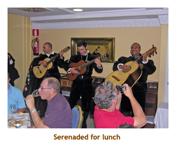
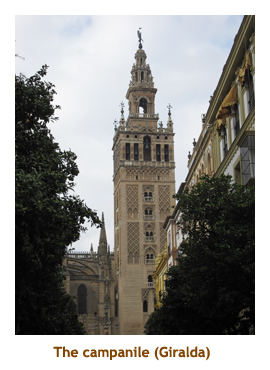
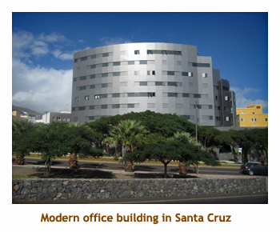

[ Home ] [ Travel ] [ Photography ] [ Pets ] [ Games] [ Rowing] [ Physics ]


Cruising on the Liberty of the Seas
Travel
Cruises
Past Cruises (Diaries)
Future Cruises
Rogues Galleries
Land Trips
Diaries (Land Trips)
Hawai'i - Big Island - 04'01
Hawai'i - Maui - 05'02
Hawai'i - Big Island - 04'03
Hawai'i - Kaua'i - 09'04
Hawai'i - Big Island - 04'06
Hawai'i - Maui - 04'06
Mainland China - 05'07
Phoenix, Arizona - 12'07
Greek Isles - 05'08
Hawai'i - Kaua'i - 09'08
Hawai'i - Big Island - 09'09
Hawai'i - Maui - 05'12
Hawai'i - Big Island - 04'13
Ireland - 08'13
Mexico - Cancun 11'13
France/Belgium/Lux 07'15
Hawai'i - Big Island - 05'17
England / Wales - 06'17
Hawai'i - Big Island - 09'19
Photography
Cameras
Underwater
Pets
Tara
Blackie
Whitey
Muffy
Ollie
Rusty
Fluffy
Rufus&Dufus
Games
Rowing
Physics
Rating (out of 5): Ship  Food
Service
Itinerary
Food
Service
Itinerary
We booked this cruise based on the ports in Spain and the ship. We had done the Freedom of the Seas
a few years ago and really enjoyed it. Would the sister ship be as nice? It turned out that it was a wonderful ship
and we really enjoyed the voyage. We were accompanied by Dave & Joan, and another couple we met on
our Beijing cruise, Kathie & Craig. To round out our "huge" ship experience, we added a B2B on the Allure of
the Seas to immediately follow this cruise. The Liberty of the Seas really was wonderful. The cabins were
the largest we have encountered so far, and the food and service were excellent. The ship has a double
occupancy capacity of 3,634 passengers and there were 3,520 aboard. We were told that all cabins were
occupied, so there must have been a number of singles. Of the 3,520 there were only 41 kids (under 18).
There was a huge Cruise Critic contingent aboard, with over 500 people enrolled for the Meet & Mingle.
I have never seen such a large CC participation before. The CC thread prior to the cruise had "overflowed"
twice and was hence in three parts, with something like 50,000 posts in total!
Pre-cruise (Oct 26 - 28) - Trip to Barcelona
Oct 26/27 - Chrissy came over to the house for pizza and then drove us to airport. We left the house at 6:30 PM. Our flight to London Heathrow was at 9:30 PM. It was a smooth flight to LHR, and we arrived at 2:30 PM. We had customs to go through and, of course, security. We were an hour late leaving to Barcelona, leaving at about 7:30 PM. In Barcalona we took the bus from terminal 1 to terminal 2, then a train from the airport to Sants Estacio. Two guys with guitars boarded with us and and sang a couple of songs for handouts. The guy sitting next to us said they were Argentinian because of their accents. It was about a 10 minute walk from the station to the hotel. We checked into the hotel about 9:30. We did a walk around the hotel area and found a grocery store where we bought some snacks. We were in bed by 10 PM - it had been a long day! Kathie and Craig were staying at the same hotel, but we didn't see them until the next day.
Oct 28 - With the time zone change, we woke up at 2:30 AM.
We were awake until about 5:00 AM and then slept till 9:00. Breakfast
was not included at the hotel, but it was a reasonable price so
we gave it a try. It was the usual European fare.
No one asked our room number, so it was sort of "included". After
breakfast we walked back to the train station to catch the HO-HO bus.
It was a rainy and cool day. The rain pretty well stopped so we were able
to sit on the open second level of the bus. We did the red loop first (2 hours) and then
switched to the blue loop (another 2 hours). The highlights were the
Sagrada Familia (we'd been there before), the various Gaudi
buildings and the huge stadium where the Barcelona football team
hangs out. The only place we got off the bus was at Guell Park.
There we walked through the amazing architecture of Antoni Gaudi.
The house where he lived was turned into a museum. It really was an
interesting place. We reboarded the bus and were
back to the hotel by 5:00 PM. We wandered around looking for a
restaurant and then decided to eat at a "Subway" type sandwich shop
called Pans & Company. I had a crappy sandwich and so-so fries.
I wouldn't go back there again. We found a grocery store to pick up
some desert, and to get a case of Coke and some peanuts for the cruise.
Back at the hotel we read for a while and then went to bed.
Day 1 (Sat, Oct 29) - Boarding in Barcelona
I woke up at 12:30 AM. I lay there until 1:30 when Marjorie woke up. We read until 4:00. Going back to sleep we slept until 9:00 again. We didn't bother with breakfast today. We walked around outside a bit and then ordered a cab for 11:00 AM. We were supposed to get a van for K&C and ourselves, but because the taxi company was so busy, we could only get separate small taxis. We were to the ship by 11:30. Checkin was very quick and we were on the ship before noon. None of the cabins were open yet so we opted for lunch. The Windjammer buffet was packed. So, we went down to the deck 3 dining room for a special lunch for Diamond members (+) and B2B passengers. It was very quiet there. I had NY steak and apple pie. Note: D&J had just completed a Spanish land tour ending yesterday in Barcelona. They were at a different hotel than us and we didn't see them until later this afternoon aboard the ship.
By the
time we were finished lunch, the cabins were open and our suitcases were there.
We wandered around the ship for a bit and met with D&J. They had had a
wonderful tour through Spain. We were prepared for the size of the ship
as we had already been on the Freedom, but it still awed us. The Royal Promenade
was really impressive. We returned to our cabin and
unpacked our clothes, The muster drill was at 4:15 in the theatre and then sailaway
was at 5:00. I had prime rib for dinner. We read for a while and then went to bed.
The clocks were set back 1 hour tonight (daylight saving ends).
Day 2 (Sun, Oct 30) - A day in Cartagena
Another interrupted night. I woke up at 1:30 AM. Great! I lay there for a while and eventually Marjorie woke up. This time we got dressed and headed out to wander the ship. We ran into a few other time lapsed folks walking through the Royal Promenade. It was nice having the ship to ourselves. We were back to bed at 4:30. We woke up at 9:30, but realized we hadn't changed the clocks. It was actually only 8:30. We had breakfast in the Windjammer, read a bit, and then watched coming into Cartagena (docking at 11:00). Trivia: just over 10 months ago we were docking in Cartagena, Colombia!
Marj stayed on the ship for lunch and then wandered into
town on her own. I headed off on an 11:30 city tour with D&J. We boarded
our bus and then drove to about 200 yards from ship!! (Why didn't we just
walk there?) We got out to explore Concepcion Castle. Inside there
was an interesting movie on the history of the area. Outside we saw ramparts,
canons, a lighthouse, and a wonderful view of the city. The lighthouse was
a "fake" one and was used by the Moors to lure foreign sailing ships
onto the rocks. Our captain wasn't fooled! One amazing exhibit consisted of
scale models of some ancient Roman buildings with real moving
and talking Roman citizens (actors) projected
into the scene at the proper scale. Amazing!
After an hour
of touring the castle we drove to a museum enclosing a section of the
Byzantine Wall from 590 AD. There was a catacomb with some bones excavated
underground plus an interesting cross section of the wall. Our final stop
was at pedistrian mall to walk along shopping street. Being Sunday, everything
was closed. We were given some time on our own so I stopped at a church
to hear the pipe organ. It was lovely. The end of the mall was only a
short distance from the ship and I was going to walk but then remembered
I had left some stuff on the tour bus. So I boarded with everyone else
and bused it back to the ship. We were back by 4:00 PM. It had been a
warm and sunny today, reaching 26 degrees. After our rainy, cool day in
Barcelona this was nice. In fact, this was to be our weather for the rest
of the holiday! I had seafood kabobs for dinner (shrimp, scallops and
monkfish). We didn't do any entertainment so went to bed early.
Day 3 (Mon, Oct 31) - Malaga and Granada
This morning we were up at 7:00 AM. That was a much better sleep, We
watched the ship come into dock. This was the second time that we had
been to Malaga. The previous time we had done a tour of Malaga city.
This time we were booked for a tour to Granada to see the Al-Hambra.
The local weather for today was supposed to be sunny and
25 degrees. We had breakfast and then headed off to the all day tour with
K&C. At 8:30 we boarded a bus and departed for Granada about 1.5 hours
away. We did a scenic drive through the city of Malaga and then headed
across the countryside. We were heading towards the Sierra Nevada mountains,
so it was quite scenic. We arrived in Granada about 10:00 AM and drove
to the site of the Al-Hambra. It was still sunny but the temperature (22
degrees) was a bit cooler than Malaga due to our much higher elevation.
We had to wait a bit to enter the site as our tickets were "timed" to spread
out the mass of visitors.
We first walked
through the Generalife garden area. At the entrance was an outdoor theatre like construction
with a sloping floor, but with only three rows of bench seats about 50 feet apart. Very strange!
There were lots
of trees and shrubs, and rose bushes. The gardens were started in the 13th
century and were the favorite hangout of the Nasrid kings.
Then we toured through the Moorish buildings of the Casas Reales - lovely
waterways with reflections. After that we toured the newer buildings from
the reign of Charles V. Then we toured the buildings of the Alcazaba at the lowest
point of the grounds. Finally we had some time to wander around in the
sunshine. At about 1:30 we gathered together for a short walk to a hotel and restaurant. They
had a wonderful Spanish meal for us (paella, etc) with a group of 6 guitarist/singers from the
local university. Delightful! After lunch we were given some shopping time. We were back on
the bus by 3:30. We drove through the city of Granada and then headed back to Malaga.
Along the way we did a pit stop at a service station and wandered the shops. Then on
to Malaga arriving at the ship about 6:00 PM. For dinner I had ravioli (ricotta and spinach).
Marjorie was tired, so I went to a singer/impressionist with Dave. He was very good.
Happy Hallowe'en!!
|  |
Day 4 (Tue, Nov 1) - Cadiz and Seville
We were up at 6:30 this morning to watch the ship come into Cadiz harbour. It looked
like another nice day. We had breakfast and then hustled to our tour at 8:00 AM. We had
booked a tour to the city of Seville. Today was All Saints Day, so not much would be
open there in the way of shopping.
On the bus, we drove through Cadiz and out onto the highway to Seville (about 1.75 hours).
The drive was through very flat countryside with monotonous crops - not nearly as
interesting as driving through the mountains yesterday. Along the way we did a
pit stop at a service station, where Marjorie bought a can of Spanish olive oil.
We we finally arrived in Sevilla and drove through 1929 Worlds Fair area. There were
lots of original buildings still there - the pavillions of the participating countries. Then
we stopped at the Casa de Pilatos to tour through the palace, built in the 1500's.
The Duchess of Mendinaceli (84 years old) still lives here in a small corner of the
palace.

Then we drove to the huge Seville Cathedral (and Giralda). There was a special
All Saints Day service going on inside, so we just saw a bit of the inside of the cathedral
from an open door. There was a huge statue on top of the campanile that could swivel with
the wind, which earned the tower the nickname of "La Giraldo" (the weathervane).
The guide then took us on a walk around the nearby Jewish Quarter.
The we circled back to the main plaza by the cathedral where we had 45 minutes for lunch (on our own).
Marj had packed some goodies, so I had a Coke and a large muffin as we sat in the sunshine.
After lunch we walked about two blocks to the Real Alcazar (Royal Palace). This was
built by Pedro I in 1364. This is where Isabel I sent Columbus to the New World. Again, the
style was very Moorish with lots of arches and latice work. After the tour through the palace,
we reboarded the bus and took a slightly different route back to Cadiz (on a brand
new highway that had opened that week). We were back to the ship by 4:30.
We did the free drink thing (for Diamond members) at 5:30 and snuck in D&J with a
judicious redistribution of room cards. For dinner I had the royal sirloin - very rare.
We ate fast and were off to the 7:30 show of Green Planet - a high wire,
Cirque de Soleil type act. Tonight
we turned the clocks back 1 hour ready for the Canary Islands.
Day 5 (Wed, Nov 2) - A Day at Sea
Today was our first day at sea. We were up at 7:00. I went up to the gym, then we had breakfast
at 8:30. Our first trivia session was at 10:00. It was in the Schooner Bar and was standing room only
- far too many people! Right after was the Meet & Mingle for the CC group in the Viking Lounge.
There must have been 200 or more people there. The biggest M&M I've ever seen!
We did the formal dining room lunch and it was excellent - a great salad
bar and a huge selection of entrees. The formal lunches were only available on sea days.
We played hand & foot with D&J and then went to the free booze thing at 5:00. The Diamond
cocktail event was held daily in the large Sphinx Lounge, but it was packed. Lots of Diamond
members aboard. For dinner I had lamb chops which were excellent. At 8:30 we did trivia again
and then went to the show at 9:00 for an Elton John impersonator. The theatre was packed and
we couldn't get a seat so we left. After all, he wasn't even the real thing!
Day 6 (Thu, Nov 3) - Santa Cruz de Tenerife
After a day at sea, we arrived at the Canary Islands. We were up at 7:00 to watch
us arrive in Santa Cruz de Tenerife. We had breakfast and then got ready for our tour
at 9:00 of Tennerife and the Mount Teide volcano. As we were exiting the ship, the
security computer broke down and the staff had to handwrite each name and cabin # as
we got off the ship. This made us almost an hour late starting the tour. The forecast
was for a rainy, cloudy day of about 22 degrees along coast. We drove through the city
and then into the country towards the volcano national park. As we approached
2500 feet elevation, we broke through the clouds into brilliant sunshine. However, the
temperature had dropped to 10 degrees. The landscape changed from green forest
to barren lava. We stopped at a restaurant for hot chocolate and cookies. Then we
drove on to a view of Mount Teide. We were in a giant crater which resembled the
surface of the moon (although I've never been there). We stopped
by some very interesting rock formations and were given some
time to scramble up and down the rocks. It was wonderful!
Then we loaded up for the drive back to Santa Cruz. By this time the coastal clouds had dissapated and we had blue skies all the way. Along the way we passed a telescope installation. We drove through the city of Santa Cruz and were at the ship by 3:00 PM. We still had a couple of hours in port, so we caught the shuttle to town and went to the grocery store (Hiperdino). We restocked up on Coke and beer. We were back to ship by 4:30. There was a special Captain's Club reception at 5:00 in the skating rink. For dinner I had roast beef. It was very good. The entertainment was a magician. We had seen him before, long ago. He was very good.
Observation: As we drove through the city, the shops, apartments
and houses were typical Caribbean style - one or two stories, painted stucco finish.
However, every building was freshly painted, the sidewalks were clean and there
were well kept yards and gardens. What a contrast to the crumbling ghettos we have seen
in the Caribbean! I was very impressed.
|  |
Day 7 (Fri, Nov 4) - Santa Cruz de La Palma
We were up at 6:40 AM for our final port stop before the Atlantic crossing. We watched
the ship come into Santa Cruz de La Palma. Yes, both islands we visited had the same
capital city name - Santa Cruz. La Palma rises to a height of 7,959 feet on a base of
280 sq miles, making it the steepest island in the world. We had booked a tour that would
take us up to one of the higher calderas.
We had breakfast and then headed off to our tour at 8:15.
Out on the dock it was a beautiful sunny day, with a temperature of 22 degrees. We
drove through the town of Santa Cruz. Once again the houses and buildings were all freshly
painted and very clean. We drove up the mountainside, across a plateau, past the
village of El Paso and through pine forests up to the caldera (La Caldera de Taburiente).
The final leg to the caldera was steep, on a narrow and twisty road with the bus
appearing to hang over the steep ledge of the road. Marjorie and I were in the
second row of seats, and the two ladies in front of us covered their eyes or looked
at the floor. They couldn't look out!
At the Lomo de las Chozas lookout we departed the bus and
walked through part of the caldera pine forest to a wonderful view of the caldera.
We had about an hour or so to walk around and then
headed back on the bus. Not too far from the caldera we stopped at the national park
museum. There were lots of good displays there about the geology and the wildlife of the
area. As we re-entered the city of Santa Cruz, we stopped at
a craft school for mentally handicapped people. Our final stop was at a small
historic church and a wonderful view of the city and the dock area. We
were back to the ship by 1:00 PM. We had lunch and then read in the sunshine.
Afterwards, I went up to the gym for a workout. There were two
Concept II Model E rowers there, so I never had a problem getting one of them. Later
we went for a walk around the dock area. For dinner I had a lamb shank - it was huge! The
entertainment was a violinist who was very good. Tonight we set our clocks back 1 hour.
Days 8 - 14 (Nov 5 - 11) - Seven Days at Sea
So, now we settled in to the task of crossing the Atlantic. Well, I guess we didn't actually
have any tasks to do, we just enjoyed the ocean. The weather was mostly warm and sunny and
the seas were very calm. Even though the swells were sometimes fairly large, our huge ship
cut right through them. Our days were much the same, but with setting the clocks back 1 hour
every second night, we tended to get up earlier each day. We were generally up by 6 and
I would do the gym. After cooling down we would have breakfast in the Windjammer. Our
trivia team (Marj and I, D&J, K&C) entered "progressive" trivia which was total points over
seven days. So, we played every day at 11:00 AM. We so enjoyed the lunch / salad bar
in the dining room that we ate there most days. The afternoon activities varied, but included
reading and a game of Ticket to Ride or Hand & Foot each day. Following are some of
the special things that we did.
Day 8: We attended a special Captain's Club luncheon for previous passengers. It was formal night and I had lobster and shrimp for dinner. In the dining room we ran into Gene and Maxine who were our dinnermates on the Brilliance of the Seas transatlantic cruise in 2006. We all remembered each other and Maxine even asked me "Weren't you and your son going to the Galapagos?". Now how could she remember that?
Day 9: We had lunch at Johnny Rockets (burgers and shakes). In the afternoon we watched How to Train Your Dragon in 3-D. For dinner I had chicken picatta. We popped into Saturday Night Fever to check out if we wanted to attend a future performance.
Day 10: At 1:30 PM, the CC group had organized a cabin crawl. There
must have been 100 of us marching down the hallways to visit various cabins. Don't
know what the other passengers and room stewards thought! Two of the "open
houses" were grand suites. Nice to see how the rich live.
Later on in the afternoon we attended a skating show. They had
to stop it midway through as the ship was rocking a bit. For dinner I
had pork tenderloin.
Day 11: For dinner I had steak oscar. The entertainment was a classical pianist. He was excellent.
Day 12: For dinner I had surf and turf. Marjorie headed off with D&J to see Saturday Night Fever while I went to a lounge to read.
Day 13: At 10:00 AM I went to a lecture on Isambard Kingdom Brunel, a 19th century British engineer and architect. For dinner I had lobster and fillet. Yumm! Then we went to the "replay" of the skating show. It was very good.
Day 14: Our final day at sea. I had rice and stir fried veggies for breakfast for a change. Very good! For dinner I had shrimp and mahimahi tempura. Then it was time to pack our bags for the 11 PM pickup.
Trivia about trivia: As I mentioned we played progressive trivia
each day. There were 63 teams competing, although only about 50 teams
actually played all seven days. K&C were the real backbone of our team
with the rest of us filling in the blanks. We had a strong start and led in total
score for most of the week. Over the week a couple of other teams chipped
away at our lead. On the final day, we were barely 1/2 a point ahead of the
second place team and a full point ahead of the third place team (out of
approximately 90 points). All top three teams scored 19/20 on the final quiz, so
we retained our 1/2 point lead to win the tournament. Very exciting!
Day 15 (Mon, Nov 12) - Fort Lauderdale, Florida
We were up at 5:30 to watch us come into Fort Lauderdale. We had a quick breakfast and then headed to Studio B for our 8:30 departure. The ship was delayed in getting cleared by local US customs by 1.5 hours. We were finally off the ship at 10:30. We went out to the shuttle bus, but Royal Caribbean had screwed up and we weren't on the shuttle list. So, we grabbed a taxi. D&J grabbed their own taxi as they were off to the car rental place. We were to the Hilton hotel by 11:30. RCI was paying for the hotel as we were considered to be B2B passengers. We had a lovely room with a multi-million dollar yacht docked by our balcony. Marj did a much needed laundry and then we walked to Walgreens and Publix to look for Coke and snacks. We read by the pool for a while. We joined D&J for dinner at 5 Guys (Dave had a car!). The restaurant was identical to the one in Calgary. Great burgers! We went to bed early.
For the continuation of our holiday please pop to our Caribbean cruise diary.